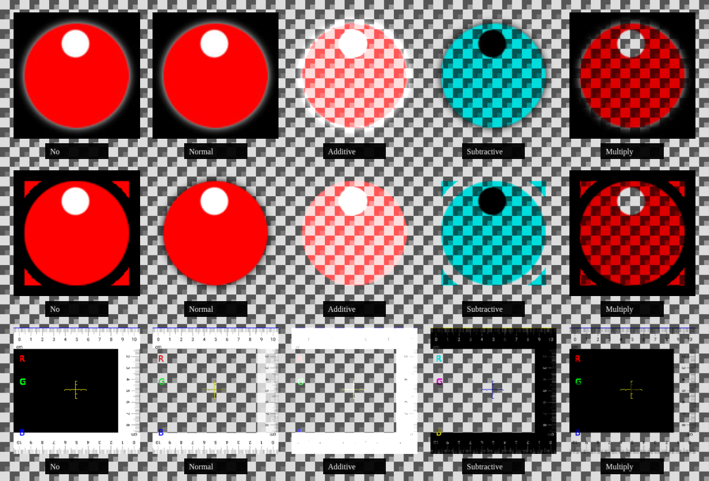

Visual.paras¶
Visual.paras has different usage for different vtype. See Visual & Assets for general information about Visual component.
paras only for ShaderFlag enabled¶
X-visual extended some shaders for special visual effects. The following parameters can be meaningful only for these shaders.
- paras.u_tex
A string pointing to file in ‘asset’ folder. If the is not undefined, the vtype’s flag, ShaderFlag.defaultex is ignored.
u_tex is a shader’s uniforms parameter, which means only Visual using THREE.ShaderMaterial can has a u_tex parameter.
After v0.3, u_tex is an array for shader of ShaderFlag = colorArray. The array can be morphed using u_morph in ModelSeqs.script.
- paras.colors
An array of color (0 ~ 1) to used by morphing handling.
paras only for shader = colorArray¶
Shader colorArray is a phone material shader supporting color morphing and texture morphing.
Currently it’s ambient, diffuse & specular parameter are constant 1.0. But it can accepting an array of colors and an array of textures, can can be morphed with ModelSeqs.script.paras.u_morph<i>.
test:
test/html/morph-color.html
test/html/morph-event.html
In addition to u_tex & colors, the shader also needs paramets of texture weight and texture mixing mode.
- paras.texMix
This parameter is type of xv.XComponent.ShaderAlpha.
X-visual only support two of texture mixing / blending mode from Three.js, normal and multiply.
The following example is modified from Three.js examples, with a PNG file added.
{kind=link}
But as texture mix morphing introduced, it’s not usable. X-visual is trying to implement some of these with shader.
See test: texture & color morphing.
See also Three.js example: material blending.
vtype = scaleOrb¶
test:
test/html/shader-scaleorb.html
test/html/shader-multi-orb.html
- paras.orbR
Number of sphere radius
- paras.orbScale
Array of [x, y, z] scale
- paras.whiteAlpha
Out of orb’s range alpha, used for object’s default color.
vtype = worldOrbs¶
test:
test/html/map3d/geopath-road.html
test/html/map3d/cd-express.html
- paras.orbScale
Array of [x, y, z] scale
- paras.colors
Colors of orbs. Example:
[[0, 0, 1], [0, 1, 0], [1, 0, 0]]
which makes 3 orb in blue, green, red.
- paras.orbR
Orb’s radius,. Example:
[30, 50, 30]
- paras.offsets
Orb’s offsets. Example:
[[0, 0, 0], [-8, 0, 0], [-16, 0, -0]]
All three orb’s will move with offsets to each other when position changed.
- paras.whiteAlpha
Out of orb’s range alpha, used for object’s default color.
vtype = orbGroups¶
test:
test/html/map3d/gepaths.html
test/html/map3d/cd-express.html
orbGroups has all paras for worldOrbs. In addintion to those paras, it also has groups configuration.
- paras.follows
Groups following distance, in t’s percentage. E.g if t = 10, means a group is updated 10 percent later.
- paras.t_range
Orb’s visible range, 0 ~ 1. The group will be hidden when t is out of range. t means the tweening weight updated each frame by XTweener.
vtype = tiledOrbs¶
test:
test/html/map3d/hexacylinder.html
test/html/map3d/epsg4326-points.html
tiledOrbs should been used with tiled geometry - currently only tiles generated as hexacylinder.
tiledOrbs is a super set of worldOrbs. In addition, has:
- paras.thermalColors
Specifying the 3 colors used for showing tile’s height. First color is of height 0, last for max height.
See test case for parameter example explained.
vtype = point or refPoint¶
It’s been used for vtype = AssetType.refPoint or AssetType.point.
For these vtype, it’s usually used together with AnimType.U_MORPHi paras and AnimType.UNIFORM paras.
Check it for how Visual.paras and ModelSeqs.script.paras work together to change glsl/shaders behaviour.
If the Visual.asset specified a gltf asset, the gltf mesh will be converted into visible points, as particles (e.g. the vertices are tweened with uniforms).
If the Visual.asset parameter is null or undefined, the Obj3.mesh will be created by Thrender using this entity.Visual.paras.obj3type, which can be one of geometry type of XComponent value.
– For AssetType.refPoint
TODO test case as example.
– For AssetType.voxel
A Voxel is handled in x-visual as a single WebGl point.
- paras.noise
Not implemented
If true, the generated Object3D object will have a ‘a_noise’ attribute. For animation type AnimType.U_MORPHi and AnimType UNIFORM, this value is used for scale the distance.
- paras.vert_scale
A string for vertex size scale. Here is how the default particles vertex shader handling this parameter.
gl_PointSize = size * `${paras.vert_scale || '10.0'}`;